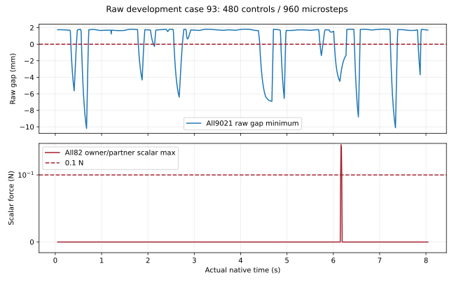

返回128个完整原始窗口
完整开发窗口，480控制步／960物理步；候选配对与正式留出另行验收。
提案 3098；初速度比例 0.5；随机命令幅度 0.20000000298023224 rad。前六槽主判据 True；几何或接触失败 True；硬限位失败 True。

下载完整74关节 q/qd、实际时钟和960步判据曲线（CSV gzip）
实际原生时钟 0.3416666844859719 s；完整状态及全部相机尝试
实际原生时钟 6.166666988283396 s；完整状态及全部相机尝试